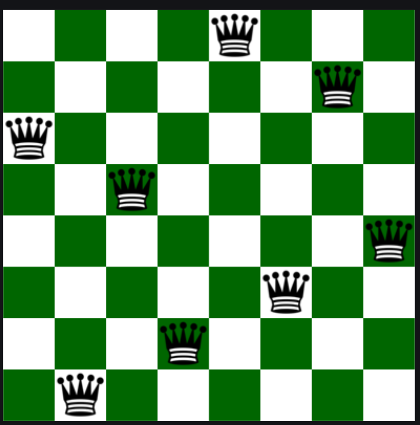

The N-Queens Problem
The n-queens is the problem of placing n queens on n × n chessboard such that no two queens can attack each other. Given an integer n, return all distinct solutions to the n -queens puzzle. Each solution contains a distinct boards configuration of the queen's placement, where ‘Q’ and ‘.’ indicate queen and empty space respectively.
Visualize ➔